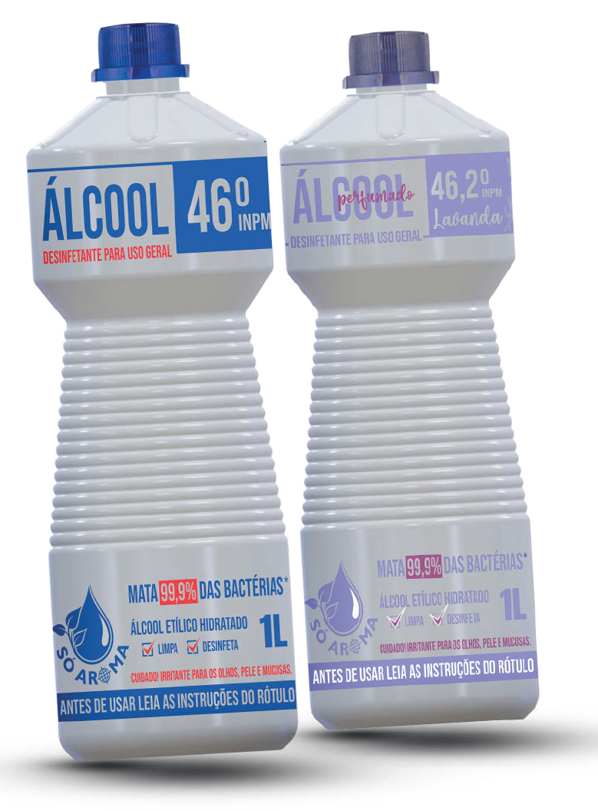

Álcool para Limpeza
O álcool tradicional é uma opção prática e eficiente para higienizar superfícies e eliminar germes, sendo útil em diversas tarefas domésticas. Já o álcool perfumado oferece os mesmos benefícios de limpeza, com a vantagem de deixar um aroma agradável no ambiente após o uso. Ambos são versáteis e ideais para quem busca uma limpeza rápida e eficaz, com ou sem fragrância.
Disponível em embalagens de: 500ml e 1L.
Downloads
Ficha Técnica - Álcool Tradicional
